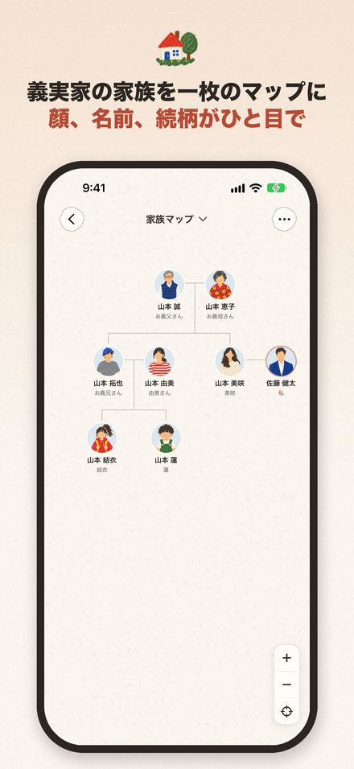
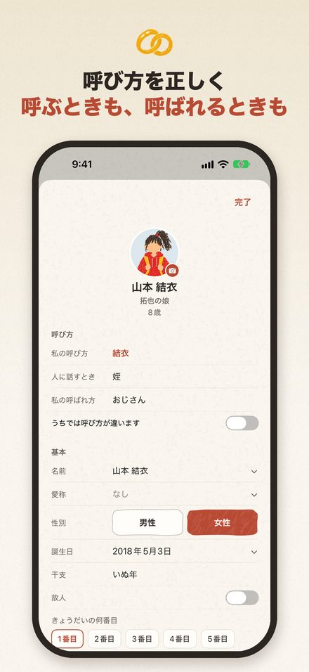
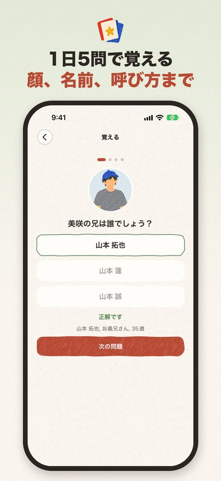
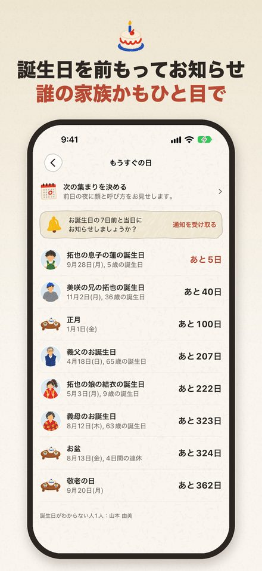

義実家ノート
義両親や親戚の顔と続柄をひと目で
お盆や正月の帰省、顔合わせや結婚式の前に、義実家の人たちの顔と名前、呼び方を1分で見直せます。大きな文字とVoiceOverに対応し、おじいちゃん、おばあちゃんにも使いやすい設計です。
App Storeで近日公開



結婚すると、新しい家族が一度に増えます。いちばん困るのは「この方はどなただったかな」「何とお呼びすればいいの？」という瞬間ではないでしょうか。義実家ノートは、パートナーの家族を、あたたかくシンプルな一枚の家族マップにまとめます。顔、名前、年齢、誕生日、そして一人ひとりの呼び方まで。
 家族マップ
家族マップ
- 誰かをタップすると、あなたとの続柄と呼び方がすぐにわかります
- 親、きょうだい、配偶者、子どもをタップで追加。マップが少しずつ広がっていきます
- 自分の家族、パートナーの家族、友人、同僚をやさしい色で色分け
- 亡くなった方もマップに残せるので、家族のつながりが途切れません
 呼び方を、正しく
呼び方を、正しく
- 父方か母方か、年上か年下かを見分けて、正しい言葉を出します。たとえば親の兄は「伯父」、弟は「叔父」。どちらも「おじさん」と呼びますが、書くときの漢字が違います
- 面と向かって呼ぶ言葉と、人に話すときの言い方を分けて表示します。たとえば呼ぶときは「お義兄さん」、人に話すときは「義兄」
- 「結婚前は名字に『さん』をつけて呼ぶことが多い」など、場面ごとのヒントつき
- 「健太さんの息子の蓮くん」のように、誰の誰なのかがひと目でわかります
- 家ごとに呼び方が違うなら、わが家の呼び方に変えられます
- 10の言語の呼び方に対応。国際結婚なら、画面は日本語のまま、相手の家族の呼び方だけ相手の言葉で表示することもできます
 記録するだけでなく、覚える
記録するだけでなく、覚える
- 1日5問のクイズで、顔、名前、誕生日を覚えます
- 帰省や集まりの前の晩に、会う人を一人ずつめくって確認
- 誕生日や命日を前もってお知らせ
- わからないことは空欄のままで大丈夫。「聞きたいこと」リストにまとまり、パートナーにまとめて送れます
 ふたりで一緒に
ふたりで一緒に
- パートナーを招待して、同じマップを一緒に編集できます。呼び方はそれぞれの立場で表示されるので、同じ人があなたには「お義兄さん」、パートナーには「お兄さん」と表示されます
 誰でも使いやすく
誰でも使いやすく
- 大きな文字、ダークモード、VoiceOverに対応。ボタンは大きく、コントラストもはっきりしているので、おじいちゃん、おばあちゃんにも使いやすい設計です
- 顔と名前、続柄をいっしょに見られるので、記憶に不安のある方や、その方を支えるご家族が、親族を思い出す手がかりになります。義実家ノートは医療用のアプリではなく、病気の診断や治療を行うものではありません
 プライバシーを大切に
プライバシーを大切に
- 家族の情報は、この端末とあなた自身のiCloudにだけ保存されます。広告もトラッキングもありません
- 顔の検出は端末の中だけで行います。写真の中から顔の位置を見つけるだけで、誰かを識別することはありません。保存するのは切り抜いた顔の部分だけです
 義実家ノート Pro
義実家ノート Pro
- 写真を1人あたり何枚でも追加、練習クイズ、ホーム画面ウィジェット
- 家族マップ、呼び方、今日のクイズ、共同編集は無料です
- サブスクリプションの料金はApple アカウントに請求されます。現在の期間が終了する24時間前までに解約しない限り、自動的に更新されます。「設定」>「Apple アカウント」>「サブスクリプション」からいつでも管理・解約できます